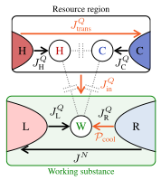
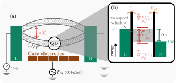
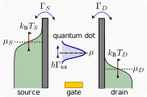
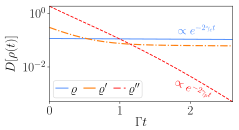
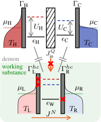

Juliette Monsel¶

I am a researcher in the group Dynamics and thermodynamics of nanoscale devices, in the Applied Quantum Physics Laboratory, in the Department of Microtechnology and Nanoscience at Chalmers University of Technology, in Gothenburg, Sweden.
I did my Ph.D. under the supervision of Alexia Auffèves at the Institut Néel (CNRS, Université Grenoble Alpes) in Grenoble, France. My thesis dissertation, entitled Quantum Thermodynamics and Optomechanics, was awarded a Springer Thesis Award and published in the Springer Theses series in 2020. Since 2020, I have been working with Janine Splettstoesser at Chalmers, first as a postdoctoral researcher and, since 2024, as a permanent researcher. I am also collaborating closely with Witlef Wieczorek’s experimental group at Chalmers on cavity optomechanics.

My research interests are:
quantum thermodynamics
open quantum systems
optomechanics
quantum optics
electronic transport
News¶
New preprint – October 17, 2025
Precision of an autonomous demon exploiting nonthermal resources and information
Juliette Monsel, Matteo Acciai, Didrik Palmqvist, Nicolas Chiabrando, Rafael Sánchez, Janine Splettstoesser
Quantum-dot systems serve as nanoscale heat engines exploiting thermal fluctuations to perform a useful task. Here, we investigate a multi-terminal triple-dot system, operating as a refrigerator that extracts heat from a cold electronic contact. In contrast to standard heat engines, this system exploits a nonthermal resource. This has the intriguing consequence that cooling can occur without extracting energy from the resource on average—a seemingly demonic action— while, however, requiring the resource to fluctuate. Using full counting statistics and stochastic trajectories, we analyze the performance of the device in terms of the cooling-power precision, employing performance quantifiers motivated by the thermodynamic and kinetic uncertainty relations. We focus on two regimes with large output power, which are based on two operational principles: exploiting information on one hand and the nonthermal properties of the resource on the other. We show that these regimes significantly differ in precision. In particular, the regime exploiting the nonthermal properties of the resource can have cooling-power fluctuations that are suppressed with respect to the input fluctuations by an order of magnitude. We also substantiate the interpretation of the two different working principles by analyzing cross-correlations between input and output heat currents and information flow.
New preprint – September 16, 2025
Sources of nonlinearity in the response of a driven nano-electromechanical resonator
Sofia Sevitz, Kushagra Aggarwal, Jorge Tabanera-Bravo, Juliette Monsel, Florian Vigneau, Federico Fedele, Joe Dunlop, Juan M.R. Parrondo, Gerard J. Milburn, Janet Anders, Natalia Ares, Federico Cerisola
Nanoelectromechanical resonators provide an ideal platform for investigating the interplay between electron transport and nonlinear mechanical motion. Externally driven suspended carbon nanotubes, containing an electrostatically defined quantum dot are especially promising. These devices possess two main sources of nonlinearity: the electromechanical coupling and the intrinsic contributions of the resonator that induce a Duffing-like nonlinear behavior. In this work, we observe the interplay between the two sources across different driving regimes. The main nonlinear feature we observe is the emergence of arch-like resonances in the electronic transport when the resonator is strongly driven. We show that our model is in good agreement with our experimental electron transport measurements on a suspended carbon nanotube. This characterization paves the way for the exploration of nonlinear phenomena using mesoscopic electromechanical resonators.
This work is part of the FQxI-funded project Nanomechanics in the solid-state for quantum information thermodynamics.
New article – July 10, 2025
Extra cost of erasure due to quantum lifetime broadening
Joe Dunlop, Federico Cerisola, Juliette Monsel, Sofia Sevitz, Jorge Tabanera-Bravo, Jonathan Dexter, Federico Fedele, Natalia Ares, Janet Anders
The energy cost of erasing a bit of information was fundamentally lower bounded by Landauer, in terms of the temperature of its environment: W≥kBTln2. However, in real electronic devices, the information-bearing system is usually in contact with two or more electrodes, with different temperatures and chemical potentials. It is not clear what sets the cost of erasure in such nonequilibrium situations. One promising technology for testing the thermodynamic limits of information processing is quantum dots, in which a bit is encoded in the presence or absence of a single electron. We here develop a thermodynamic description of devices of this type and find that, in addition to the electrode temperatures, the potential difference across the quantum dot and lifetime broadening of its energy level contribute to the minimum work cost of erasure. In practical contexts, these contributions may significantly outweigh the cost due to temperature alone.
New article – April 7, 2025
Role of electron-electron interaction in the Mpemba effect in quantum dots
Juliane Graf, Janine Splettstoesser, Juliette Monsel
The Mpemba effect has initially been noticed in macroscopic systems – namely that hot water can freeze faster than cold water – but recently its extension to open quantum systems has attracted significant attention. This phenomenon can be explained in the context of nonequilibrium thermodynamics of Markovian systems, relying on the amplitudes of different decay modes of the system dynamics. Here, we study the Mpemba effect in a single-level quantum dot coupled to a thermal bath, highlighting the role of the sign and magnitude of the electron-electron interaction in the occurrence of the Mpemba effect. We gain physical insights into the decay modes from a dissipative symmetry of this system called fermionic duality. Based on this analysis of the relaxation to equilibrium of the dot, we derive criteria for the occurrence of the Mpemba effect using two thermodynamically relevant measures of the distance to equilibrium, the nonequilibrium free energy and the dot energy. We furthermore compare this effect to a possible exponential speedup of the relaxation. Finally, we propose experimentally relevant schemes for the state preparation and explore different ways of observing the Mpemba effect in quantum dots in experiments.
J. Phys.: Condens. Matter 37, 195302 – Emerging leaders 2024 special issue
New article – January 15, 2025
Autonomous demon exploiting heat and information at the trajectory level
Juliette Monsel, Matteo Acciai, Rafael Sánchez, Janine Splettstoesser
We propose an electronic bipartite system consisting of a working substance, in which a refrigeration process is implemented, and of a nonthermal resource region, containing a combination of different thermal baths. In the working substance, heat is extracted from the coldest of two electronic reservoirs (refrigeration) via heat- and particle transport through a quantum dot. This quantum dot of the working substance is capacitively coupled to the resource region. In such a setup, a finite cooling power can be obtained in the working substance, while the energy exchange with the resource region exactly cancels out on average. At the same time, information is always exchanged, even on average, due to the capacitive coupling between the two parts of the bipartite system. The proposed system therefore implements an autonomous demon with fully vanishing heat extraction from the resource. Unlike macroscopic machines, nanoscale machines exhibit large fluctuations in performance, so precision becomes an important performance quantifier. We give a comprehensive description of the thermodynamic performance of the proposed autonomous demon in terms of stochastic trajectories and of full counting statistics and demonstrate that the precision of the cooling power strongly depends on the operation principle of the device. More specifically, the interplay of information flow and counter-balancing heat flows dramatically impacts the trade-off between cooling power, efficiency, and precision. We expect this insight to be of relevance for guiding the design of energy-conversion processes exploiting nonthermal resources.
New article – January 6, 2025
Coherent feedback control for cavity optomechanical systems with a frequency-dependent mirror
Lei Du, Juliette Monsel, Witlef Wieczorek, Janine Splettstoesser

Ground-state cooling of mechanical resonators is a prerequisite for the observation of various quantum effects in optomechanical systems and thus has always been a crucial task in quantum optomechanics. In this paper, we study how to realize ground-state cooling of the mechanical mode in a Fano-mirror optomechanical setup, which allows for enhanced effective optomechanical interaction but typically works in the (deeply) unresolved-sideband regime. We reveal that for such a two-sided cavity geometry with very different decay rates at the two cavity mirrors when using an appropriate single-sided coherent feedback, it is possible to cool the mechanical mode down to its ground state within a broad range of parameters. This is possible even if the total optical loss is more than seven orders of magnitude larger than the mechanical frequency and the feedback efficiency is relatively low. Importantly, we show that a more standard two-sided feedback scheme is not appropriate to cooperate with a Fano-mirror system.